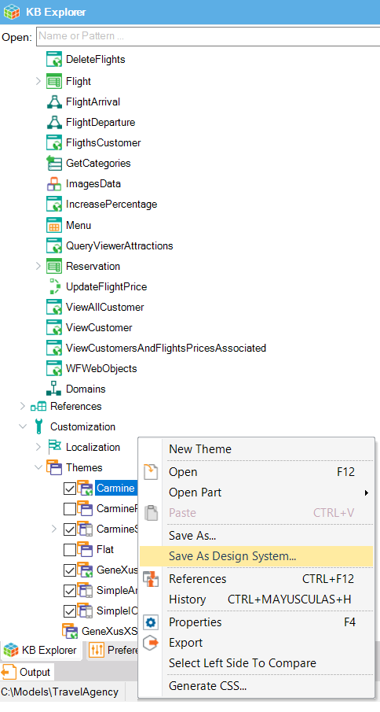
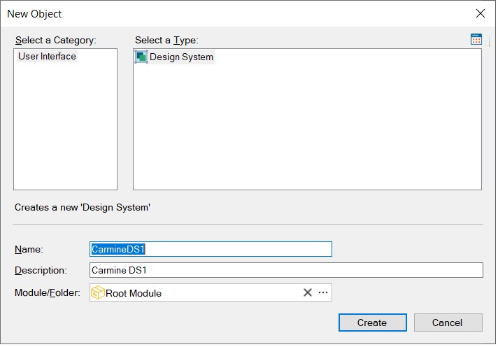

By right-clicking on a Web Theme object or a Theme object a popup menu is opened offering the Save As Design System... option:

Then, the following dialog is opened:

Once you save your new Design System object, GeneXus will automatically scan all the Theme classes and properties and will transform all into a Design System object.
This option is available since GeneXus 17 upgrade 6.
| Backlinks |
| Toc:Design Systems |